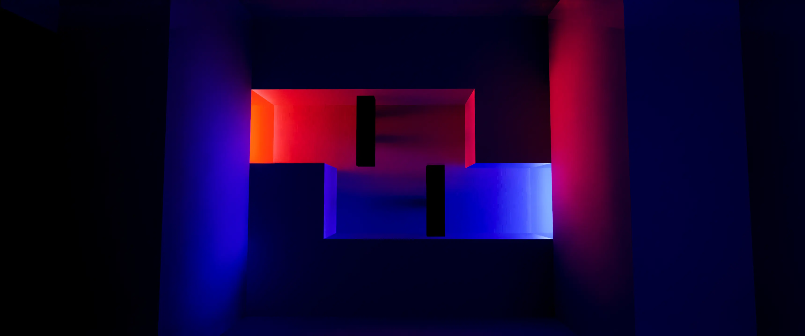
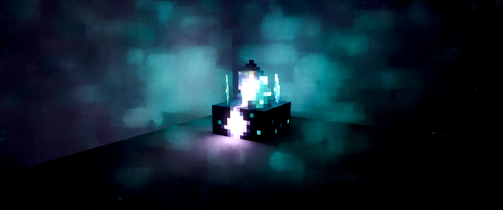
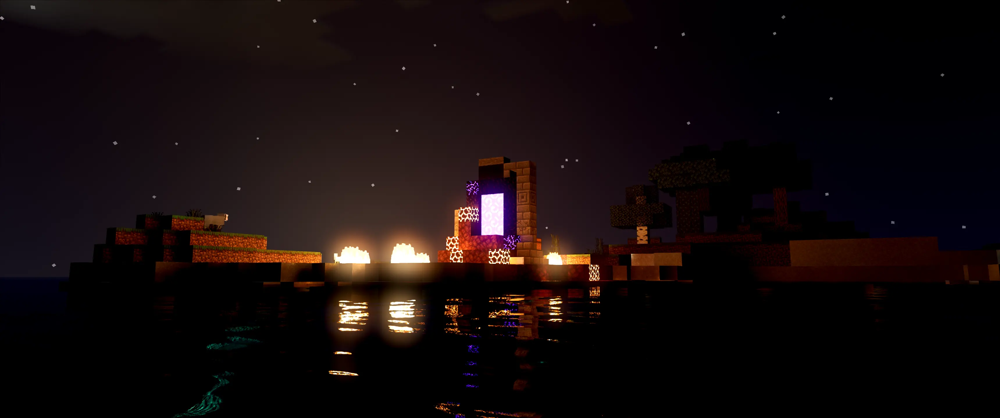

Minecraft Ray Tracing (RTX) is an improvement of Minecraft's regular visuals, enabling ray tracing for a more lifelike and realistic experience. RTX features are only available for Minecraft: Bedrock with an RTX series graphics card.
Shaders are similar to Ray Tracing and also enhance the visuals of the game, but have a different approach to rendering light and effects. Shaders are only available for Minecraft: Java and can be used with any PC specifications.